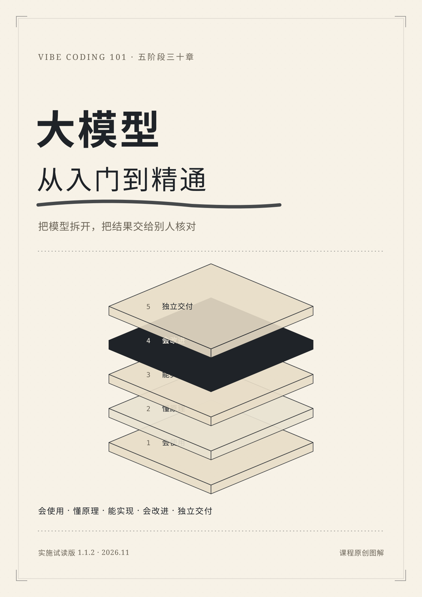

五阶段 · 三十章 · 五道能力门
大模型：
从入门到精通
先做出有依据的结果，再理解原理、实现应用、评测改进，最后独立交付。
从零基础开始，逐步补齐数学与 Python。完成路线时，应能解释模型怎样生成和学习，搭建可核验的资料助手，训练与适配一个小模型，并交付可复做的新项目。

每一阶段，留下一个能检查的成果
读完不是目的。五个阶段各留下一个可核验的成果：一份带证据的资料报告、一组能手算的机制、一个接上真实模型的助手、一份有样本数和失败解释的评测、一个别人能复做的交付包。
每章有独立题与分离答案。先作答，再核对；书末五篇深读分别讨论证据链、注意力算术、输出契约、小样本评测和回退边界。
开始前知道这些
S1/S2 的正文与本地实验无需账号；S3 起需要合法可用的模型和相应环境。本书提供真实失败记录与排查方法，目前仍是试读版，尚未完成真人全程验收。读完三十章本身不代表已通过五道能力门。
补充学习：Vibe Coding 编程实践
需要补设计、数据库、部署与编程工具时，查阅原《Vibe Coding 101》Stage 1–3 与附录，或打开配套视频。